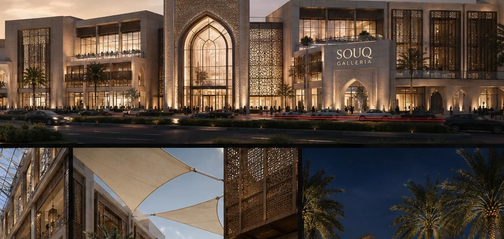
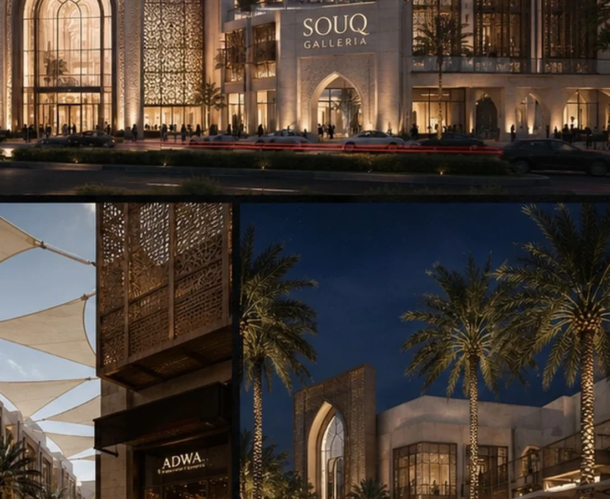
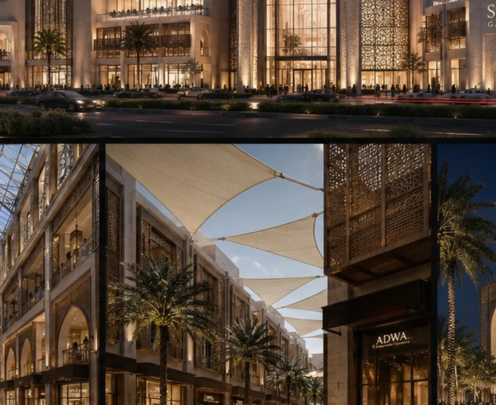

READ THE PROJECT AS A SEQUENCE OF DEVELOPMENT DECISIONS.
The fields below form BADR's standard case-study lens. Project-specific commercial claims should be replaced only when they are supported by the project record.
THE DEVELOPMENT QUESTION
How can retail become a place people choose to spend time in, not only a place to transact?
THE GOVERNING IDEA
Turn circulation into a social experience.
THE DESIGN RESPONSE
Courts, shade and regional spatial cues create a more legible and layered retail journey.
THE SIGNATURE
A sequence of shaded gathering spaces and discovery.
WHY IT MATTERS
The project’s identity is built around experience and dwell time rather than enclosure alone.
Design Direction
A project identity shaped by place, typology and experience.
Courtyard-like spaces, shaded movement and a contemporary regional vocabulary create a sequence of arrival, gathering and discovery.
Project narrative is based on the supplied BADR portfolio record and visible design material.



Design → BIM
The architectural idea continues into coordinated digital delivery.
The supplied BIM portfolio includes this project family.
A New Development Opportunity
Your Site Deserves a Development Strategy Before It Becomes a Drawing Package.